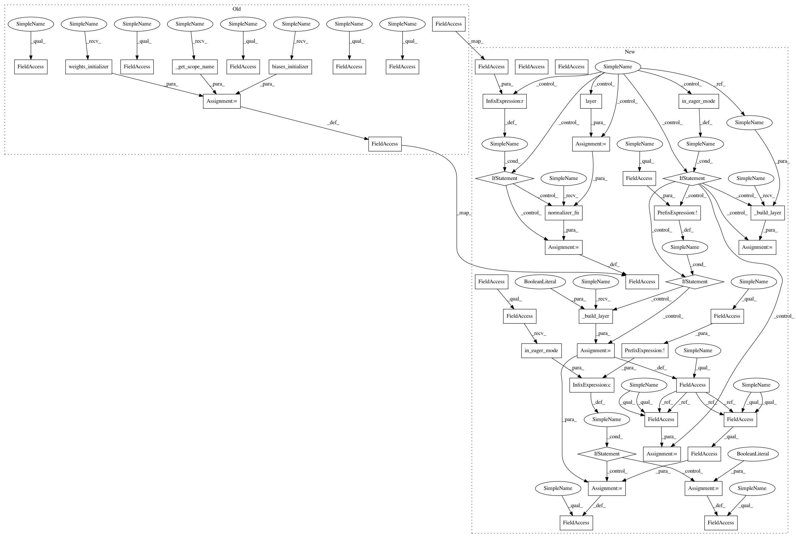

887f94bd4f292778622304ba627727a6dacad43f,deepchem/models/tensorgraph/layers.py,Conv2D,create_tensor,#Conv2D#Any#Any#,1913
Before Change
parent_tensor = tf.expand_dims(parent_tensor, 3)
for reuse in (self._reuse, False):
try:
out_tensor = tf.contrib.layers.conv2d(
parent_tensor,
num_outputs=self.num_outputs,
kernel_size=self.kernel_size,
stride=self.stride,
padding=self.padding,
activation_fn=self.activation_fn,
normalizer_fn=self.normalizer_fn,
biases_initializer=self.biases_initializer(),
weights_initializer=self.weights_initializer(),
scope=self._get_scope_name(),
reuse=reuse)
break
except ValueError:
if reuse:
// This probably means the variable hasn"t been created yet, so try again
// with reuse set to false.
continue
raise
if set_tensors:
self._record_variable_scope(self.scope_name)
self.out_tensor = out_tensor
return out_tensor
After Change
parent_tensor = tf.expand_dims(parent_tensor, 3)
for reuse in (self._reuse, False):
try:
if tfe.in_eager_mode():
if not self._built:
self._layer = self._build_layer(False)
layer = self._layer
else:
layer = self._build_layer(reuse)
out_tensor = layer(parent_tensor)
if self.normalizer_fn is not None:
out_tensor = self.normalizer_fn(out_tensor)
break
except ValueError:
if reuse:
// This probably means the variable hasn"t been created yet, so try again
// with reuse set to false.
continue
raise
if set_tensors:
self._record_variable_scope(self.scope_name)
self.out_tensor = out_tensor
if tfe.in_eager_mode() and not self._built:
self._built = True
self.variables = self._layer.variables
return out_tensor
class Conv3D(SharedVariableScope):
In pattern: SUPERPATTERN
Frequency: 4
Non-data size: 46
Instances
Project Name: deepchem/deepchem
Commit Name: 887f94bd4f292778622304ba627727a6dacad43f
Time: 2018-03-25
Author: peastman@stanford.edu
File Name: deepchem/models/tensorgraph/layers.py
Class Name: Conv2D
Method Name: create_tensor
Project Name: deepchem/deepchem
Commit Name: 887f94bd4f292778622304ba627727a6dacad43f
Time: 2018-03-25
Author: peastman@stanford.edu
File Name: deepchem/models/tensorgraph/layers.py
Class Name: Conv3DTranspose
Method Name: create_tensor
Project Name: deepchem/deepchem
Commit Name: 887f94bd4f292778622304ba627727a6dacad43f
Time: 2018-03-25
Author: peastman@stanford.edu
File Name: deepchem/models/tensorgraph/layers.py
Class Name: Conv2D
Method Name: create_tensor
Project Name: deepchem/deepchem
Commit Name: 887f94bd4f292778622304ba627727a6dacad43f
Time: 2018-03-25
Author: peastman@stanford.edu
File Name: deepchem/models/tensorgraph/layers.py
Class Name: Conv3D
Method Name: create_tensor
Project Name: deepchem/deepchem
Commit Name: 887f94bd4f292778622304ba627727a6dacad43f
Time: 2018-03-25
Author: peastman@stanford.edu
File Name: deepchem/models/tensorgraph/layers.py
Class Name: Conv2DTranspose
Method Name: create_tensor